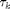
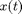
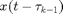

Definition of user functions
(Please load ddebiftoool into path first, see sd_demo.html.) The functions for right-hand side sys_rhs and its derivative sys_deri have the same format as in the case of constant delays, see ../../neuron/html/demo1_funcs.html.
% (c) DDE-BIFTOOL v. 3.1.1(20), 11/04/2014
Contents
Specification of state-dependent delays
The function sys_tau returns the value of the delay. This is in contrast to the definition of sys_tau for constant delays, where the delay's position in the parameter list is returned. For state-dependent delays, the header of the function sys_tau, defining the delays, has the format (see sd_tau.html for the demo example):
function tau=sys_tau(k,xx,par)
it defines the k th delay , which is allowed to depend on xx(:,1:k) (the states ,..., ) and the parameter par. This definition of delays permits the user to create arbitrary levels of nesting. Note that, when sys_tau is called with first argument k, its second argument xx has column dimension k.
Note The order of the delays corresponds to the order in which they appear in xx as passed to the functions sys_rhs and sys_deri.
Optionally, the user is encouraged to provide a function that supplies derivatives of all delays with respect to the state and parameters. Its functionality is similar to the function sys_deri. Its header has the format
function dtau=sys_dtau(delay_nr,xx,par,nx,np)
Its format is similar to sys_deri. The result dtau is a scalar, vector or matrix of partial derivatives of the delay with number delay_nr which depends on the type of derivative requested via nx and np. See sd_dtau.html for an example.
The number of delays
For systems with state-dependent delays DDE-Biftool requires a separate function that provides the number of delays:
function n=sys_ntau()
returns the number n of delays. Accordingly, the argument xx of the right-hand side sys_rhs will have the column dimension n+1. The corresponding field in the array funcs defining the user functions is named 'sys_ntau'.
Assignment of user function fields
The functions can have arbitrary names or can be anonymous. The above names are the field names in the structure containing th euser functions. Assign these fields automatically using set_funcs. Note that the flag tp_del is set to 1 for state-dependent delays. This is determined inside set_funcs using a try-catch enclosed call sys_tau().
funcs=set_funcs('sys_rhs',@sd_rhs,'sys_tau',@sd_tau,... 'sys_ntau',@()6,'sys_deri',@sd_deri,'sys_dtau',@sd_dtau,'x_vectorized',true) %#ok<NOPTS>
funcs =
sys_rhs: [function_handle]
sys_ntau: @()6
sys_tau: [function_handle]
sys_cond: @dummy_cond
sys_deri: @(x,p,nx,np,v)wrap_deri(x,p,nx,np,v,funcs.sys_deri)
sys_dtau: [function_handle]
x_vectorized: 1
tp_del: 1
sys_deri_provided: 1
sys_dtau_provided: 1
Save and continue to continuation and stability of steady states sd_demo_stst.html
save('sd_demo_funcs');